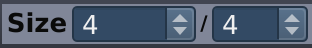

Table of Contents
This is where it all happens, this is where you can make music :-)
The Pattern Editor
allows you to create and modify the pattern selected in the Sidebar of the Song Editor by adding/removing notes and tuning
a number of per-note properties, like velocity and pan.
The Pattern Editor
can be used in two modes: as Drumkit Editor or as Piano Roll Editor. You can switch between these
two by clicking the
 and
and
 button (located on the top-right of the Pattern Editor).
button (located on the top-right of the Pattern Editor).
![[Note]](../img/admonitions/note.svg) | Note |
|---|---|
If you are editing a pattern in Selected Pattern Mode you will always hear the pattern you are editing when you playback is rolling. If you are working in Stacked Pattern Mode you will hear the active pattern(s), not necessarily the pattern you are currently editing. |
There are a couple of different notes you can create and encounter within the Pattern Editor. From left to right: regular, custom length, inaccessible, and stop-note.
: Regular note (or just note) can be created using left-clicking or Enter.
Triggers playback of a whole sample of the associated instrument.
Note The inner color of the circle represents the note's velocity. Black:
80%, red:100%, blue:50%, white:0%. But in contrast to a stop-note these circles do always have a black outline.: Custom length note can be set by right-click dragging a regular note.
Similar to a regular note but only plays back the sample until the specified point. Afterwards the Release of the instrument kicks in to cut off the sample gracefully (small values) or to add a fade out (larger values).
Note The length of the note is specified in ticks and changes along with the tempo. The sample, however, consists of a certain amount of audio frames and will not change with tempo (unless you activated Rubberband).
A regular note which is not part of the pattern you are currently editing. Instead, it belongs to a different one currently played as well. This could be within the same column in Song Mode while the Pattern Editor is locked, activated in Stacked Pattern Mode, or as part of a Virtual Pattern.
: Stop-note can be created using Shift + left-clicking
Stops rendering of all notes associated to the corresponding instrument. Afterwards the Release of the instrument kicks in to cut off the samples gracefully (small values) or to add fade outs (larger values).
The top part of the Pattern Editor contains a number of controls applying to both the Drumkit Editor and the Piano Roll Editor:
 : lets you choose the length of the pattern (in note values).
The left combo box represents the numerator of your current measure. You can enter a decimal numerator, like
4.5/4, but since resolution in Hydrogen is limited, some values are not supported and can not be entered.Note Hydrogen supports (only) the following denominators (right combo box):
1,2,3,4,6,8,12,16,24,32,48,64,96, and192because these are the factors of the maximum resolution (192 ticks per whole note).![[Tip]](../img/admonitions/tip.svg)
Tip Typing / within the numerator (first combo box) also you to quickly jump to the denominator.
 : this is the current grid resolution (
: this is the current grid resolution (1/4through1/64with triplet-based resolutions marked as1/8T).Note If you are working with a resolution of
1/16you can't go back to1/8and remove an upbeat 16th note by clicking it. But you can still select and remove it via dragging or keyboard. : when checked Hydrogen will play back notes as they are being
added to the pattern (even if transport is not rolling).
: when checked Hydrogen will play back notes as they are being
added to the pattern (even if transport is not rolling).
Note When disabled you will still hear the preview sound when clicking on the instrument name in the Sidebar. Be sure to click at the left-most position - where the preview is silent - in case you don't want to get disturbed. Or switch the currently selected instrument using ↑ and ↓.
 : enables/disables quantization. When checked,
notes recorded using
incoming MIDI messages or Hydrogen's Virtual Keyboard
will automatically respect the grid resolution currently applied,
just like notes inserted by clicking.
: enables/disables quantization. When checked,
notes recorded using
incoming MIDI messages or Hydrogen's Virtual Keyboard
will automatically respect the grid resolution currently applied,
just like notes inserted by clicking. - / : switches between Drumkit Editor and Piano Roll Editor.

The section on the left shows you which drumkit was loaded last and below that you can see the instruments that are part of the current song.
| Note |
|---|---|
Keep in mind that these are not necessarily the instruments of the kit associated with the displayed name! Each song has its own set of instruments. |
Left-clicking the box containing the instrument name will play back a sample of the instrument. Which layer will be select depends on the horizontal position of the mouse click representing zero velocity to the left and maximum velocity to the right. In addition, each instrument has its own set of features that are accessible by right-clicking the instrument. From the context menu that pops up you can select.
Delete notes: removes all notes for this instrument in this pattern.
Fill notes: this allows you to fill up the pattern with notes for the selected instrument.
Note Depending on the choice you make (
fill all,fill 1/2,fill 1/4...) notes will be placed at all, 1/2, 1/4, etc of the note positions that are allowed by the grid setting. So be careful not to mix up the 'musical' 1/2-note and the 'fill 1/2' note.Randomize velocity: automatically apply a pseudo-random velocity to each note of that instrument in the pattern.
Note The more velocity you set on the instrument, the more Hydrogen will hit “hard” on that instrument when played.
Select notes: will select all the notes played on this instrument in the current pattern. They can then be copied, moved etc. in the Pattern Editor main area.
Edit all patterns: this section of the menu has actions which operate on notes played by the instrument in all the patterns of the song.
Cut notes: remove all notes played on this instrument, in all patterns, and keep them in the clipboard.
Copy notes: copy all notes played on this instrument, in all patterns, to the clipboard.
Paste notes : paste a multi-pattern selection from the clipboard to this instrument.
Delete notes: delete all the notes associated with this instrument, without affecting the clipboard.
Tip These can be used together to change the instrumentation of a song, entirely replacing one instrument with another by just copy and pasting the notes to a new instrument.
Instrument: this section of the menu has actions which operate on the instrument as a whole:
Rename instrument: change the name of the instrument.
Delete Instrument: well, deletes the instrument ;-)
The
 button mutes the instrument and
button mutes the instrument and
 solos it.
solos it.
The order of the instruments can be rearranged by simply dragging an instrument up/down in the list and dropping it on a new position within the drumkit. Doing so will not change the sequence of notes you have created for that instrument, nor will it change anything about the song or pattern you are working on.
![[Warning]](../img/admonitions/warning.svg) | Warning |
|---|---|
It will, however, have an impact on the MIDI note mapping. |
| Warning |
|---|---|
Rearranging the instruments will also mess up the per-instrument JACK output ports. Be sure to have your drumkit set up before starting wiring. |